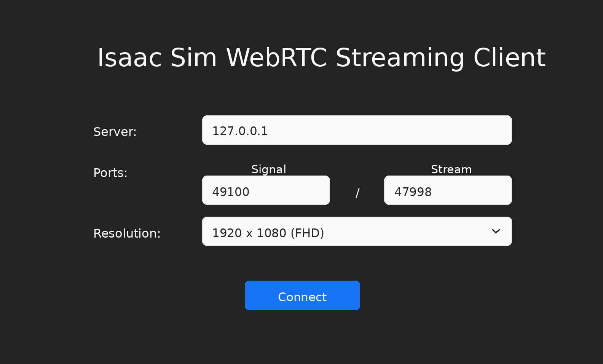
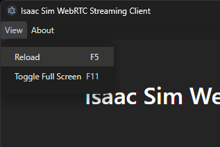

Livestream Clients#
이 섹션에서는 Isaac Sim의 헤드리스 인스턴스를 라이브스트리밍하는 방법을 설명합니다.
Warning
Isaac Sim 라이브스트리밍(네이티브 데스크톱 클라이언트 및 웹 기반 뷰어 모두)은 사설 또는 신뢰할 수 있는 네트워크에서 사용하도록 설계되었습니다. 스트리밍 엔드포인트에는 인증 또는 암호화가 포함되어 있지 않습니다. 리버스 프록시(HTTPS/TLS 및 인증 포함, 예: SSL 인증서와 기본 인증이 적용된 nginx)와 같은 추가 보안 장치 없이 공개 인터넷에 노출하지 마십시오. 클라우드 VM에 배포할 경우, 방화벽 규칙을 사용하여 스트리밍 포트를 클라이언트 IP로 제한하십시오. 사용자는 공개적으로 노출된 배포의 보안에 대해 책임을 집니다.
Note
각 Isaac Sim 인스턴스에서는 한 번에 하나의 스트리밍 방법만 사용할 수 있습니다.
한 번에 하나의 클라이언트만 Isaac Sim 인스턴스에 접근할 수 있습니다.
Isaac Sim 앱을 원격으로 종료하려면: 스트리밍된 Isaac Sim 앱에서 File 메뉴를 클릭한 후 Exit를 클릭하십시오. 그런 다음 Isaac Sim WebRTC Streaming Client 앱을 닫으십시오.
라이브스트리밍은 Isaac Sim이 A100 GPU에서 실행될 때 지원되지 않습니다. 라이브스트리밍에는 NVENC(NVIDIA Encoder)가 필요하며, A100 GPU에는 포함되어 있지 않습니다.
NVENC를 지원하는 GPU 목록은 Video Encode and Decode Support Matrix를 참조하십시오.
NVIDIA Isaac Sim WebRTC Streaming Client를 다운로드하거나 사용함으로써 NVIDIA Isaac Sim WebRTC Streaming Client 라이선스 계약에 동의하는 것으로 간주됩니다.
클라이언트 플랫폼 지원과 Isaac Sim 호스트 플랫폼 지원은 별개입니다. 지원되는 클라이언트 패키지는 Latest Release 섹션에 나열된 다운로드를 사용하십시오.
라이브스트리밍 Isaac Sim 인스턴스에 연결하는 방법은 두 가지입니다:
Isaac Sim WebRTC Streaming Client — Windows, macOS, Linux용 네이티브 데스크톱 애플리케이션입니다. Latest Release 섹션에서 다운로드하십시오. 로컬 또는 동일 네트워크 연결에 적합합니다.
웹 기반 뷰어 (Docker Compose) — Docker Compose를 사용하여 Isaac Sim과 함께 배포되는 브라우저 기반 클라이언트입니다. 별도 설치 없이 Chromium 기반 브라우저에서 실행됩니다. 클라우드 및 원격 배포에 권장됩니다. 아래의 Web-Based Streaming Client (Docker Compose)를 참조하십시오.
Isaac Sim WebRTC Streaming Client#
Isaac Sim WebRTC Streaming Client는 강력한 GPU 없이 데스크톱 또는 워크스테이션에서 Isaac Sim을 원격으로 볼 때 권장되는 스트리밍 클라이언트입니다.
Isaac Sim WebRTC Streaming Client를 사용하려면 다음 방법 중 하나를 사용하여 Isaac Sim을 실행하십시오:
전체 설치 지침은 워크스테이션 설치를 참조하십시오.
cd ~/isaacsim
./isaac-sim.streaming.sh
전체 설치 지침은 워크스테이션 설치를 참조하십시오.
cd C:\isaacsim
isaac-sim.streaming.bat
전체 설치 지침은 컨테이너 설치를 참조하십시오.
cd /isaac-sim
./runheadless.sh
Important
라이브스트리밍이 작동하려면 컨테이너를 --network=host로 시작해야 합니다.
Docker 브리지 네트워킹(-p 포트 매핑)은 컨테이너의 네트워크 네임스페이스 내에서
호스트 IP에 접근할 수 없으므로 WebRTC와 함께 작동하지 않습니다.
더 간단한 설정을 위해 컨테이너 스트리밍에는 Docker Compose가 권장됩니다. 볼륨 마운트, GPU 할당, 네트워킹, 헬스 체크를 자동으로 처리합니다. 아래의 Web-Based Streaming Client (Docker Compose) 또는 자세한 내용은 Docker README를 참조하십시오.
전체 설치 지침은 Python 환경 설치를 참조하십시오.
isaacsim isaacsim.exp.full.streaming --no-window
전체 설치 지침은 Python 환경을 참조하십시오.
./python.sh standalone_examples/api/isaacsim.simulation_app/livestream.py
Note
Isaac Sim을 실행하는 머신에는 NVENC를 지원하는 NVIDIA GPU와 호환되는 NVIDIA 드라이버가 있어야 합니다. Linux 호스트에서는
nvidia-smi로 GPU 및 드라이버 버전을 확인할 수 있습니다. 컨테이너에서는ldconfig -p | grep libnvidia-encode로 NVIDIA Container Toolkit이 인코드 라이브러리를 노출하는지 확인하십시오.인터넷을 통해 연결할 원격 인스턴스에서 Isaac Sim을 실행하려면 다음 플래그를 추가하십시오:
--/exts/omni.kit.livestream.app/primaryStream/publicIp=<PUBLIC_IP> --/exts/omni.kit.livestream.app/primaryStream/signalPort=49100 --/exts/omni.kit.livestream.app/primaryStream/streamPort=47998Docker 컨테이너에서의 예시:
PUBLIC_IP=$(curl -s ifconfig.me) && ./runheadless.sh --/exts/omni.kit.livestream.app/primaryStream/publicIp=$PUBLIC_IP --/exts/omni.kit.livestream.app/primaryStream/signalPort=49100 --/exts/omni.kit.livestream.app/primaryStream/streamPort=47998
Isaac Sim WebRTC Streaming Client 앱에서 동일한 공인 IP를 사용하십시오.
Isaac Sim이 실행 중인 호스트에서 다음 포트를 열어야 합니다:
포트
프로토콜
용도
49100TCP
WebRTC 시그널링
47998UDP
WebRTC 미디어 스트림
8210TCP
웹 뷰어 (Docker Compose 전용)
클라이언트에 검은 화면이 표시되거나 포트가 수신 대기 중이 아닌 경우, 먼저 Isaac Sim 앱이 로드된 상태에 도달했는지 확인하십시오. 컨테이너의 경우
--network=host로 시작되었는지 확인하십시오. 클라우드 또는 원격 호스트의 경우 Isaac Sim에 전달된 공인 IP가 클라이언트가 사용하는 IP와 동일한지 확인하십시오. 방화벽은 TCP49100과 UDP47998모두 허용해야 합니다. TCP 포트만 열어서는 WebRTC 미디어에 충분하지 않습니다.
Isaac Sim 앱이 로드되어 준비되었는지 확인하십시오. Isaac Sim이 처음 로드되는 데 몇 분이 걸릴 수 있습니다.
이를 확인하려면 터미널/콘솔 출력 또는 애플리케이션 로그에서 다음 메시지를 찾으십시오. 이 줄은 PIP 또는 Python Sample을 사용하여 실행할 때는 나타나지 않을 수 있습니다.
Isaac Sim Full Streaming App is loaded.
Latest Release 섹션에서 플랫폼에 맞는 Isaac Sim WebRTC Streaming Client를 다운로드하십시오.
Isaac Sim WebRTC Streaming Client 앱을 실행하십시오.

로컬 Isaac Sim 인스턴스에 연결하려면 기본 127.0.0.1 IP 주소를 서버로 사용하십시오.
Connect를 클릭하십시오. 연결 과정은 잠시 시간이 걸릴 수 있습니다. 연결되면 클라이언트 창에 Isaac Sim 인터페이스가 나타납니다.
Note
Isaac Sim WebRTC Streaming Client는 Isaac Sim 헤드리스 인스턴스와 동일한 네트워크 내에서 사용하는 것이 권장됩니다.
동일 네트워크에서 Isaac Sim 헤드리스 인스턴스에 연결하려면 127.0.0.1을 Isaac Sim이 실행 중인 머신의 IP 주소로 교체하십시오.
Linux: Debian 패키지를 설치하십시오.
Debian 패키지 (Ubuntu / Debian, 메뉴 통합 포함):
sudo dpkg -i ./isaacsim-webrtc-streaming-client-*-linux-*.deb sudo apt -f install dpkg -l | grep isaacsim-webrtc-streaming-client
그런 다음 애플리케이션 메뉴에서 Isaac Sim WebRTC Streaming Client를 실행하거나 터미널에서
isaacsim-webrtc-streaming-client를 실행하십시오.패키지에는 FUSE 또는 AppImage 런타임이 필요하지 않습니다. 표준 데스크톱 환경 외에 추가 시스템 라이브러리 없이 Ubuntu 22.04, 24.04 이상에서 실행됩니다.
Ubuntu 24.04 이상에서는 Electron의 샌드박스가 비특권 사용자 네임스페이스를 필요로 합니다. 클라이언트가 SUID 샌드박스 오류로 실행에 실패하는 경우 다음 명령으로 활성화하십시오:
sudo sysctl -w kernel.unprivileged_userns_clone=1 sudo sysctl -w kernel.apparmor_restrict_unprivileged_userns=0
sysctl -w설정은 임시적이며 재부팅 후 초기화됩니다. 영구적으로 적용하려면/etc/sysctl.d/아래 파일에 추가하십시오:sudo tee /etc/sysctl.d/99-electron-sandbox.conf >/dev/null <<'EOF' kernel.unprivileged_userns_clone=1 kernel.apparmor_restrict_unprivileged_userns=0 EOF sudo sysctl --system
Windows:
로컬 또는 원격 Isaac Sim 인스턴스 연결에 문제가 있는 경우, /kit/kit.exe 및 Isaac Sim WebRTC Streaming Client 앱이 Windows 방화벽 허용 목록에 있는지 확인하십시오.
Mac:
DMG 파일을 열고 Isaac Sim WebRTC Streaming Client 앱을 Applications 폴더 아이콘으로 끌어다 놓아 설치하십시오.
Isaac Sim 앱을 스트리밍할 때 스트리밍된 앱 내에서 복사/붙여넣기에 각각
Ctrl+C와Ctrl+V를 사용하십시오.호스트에서 클라이언트로 복사하려면
⌘C와Ctrl+V를 사용하십시오.
연결을 다시 로드하려면 View 메뉴에서 Reload를 클릭하십시오. 잠시 후 빈 화면이 표시될 때 유용할 수 있습니다.

Web-Based Streaming Client (Docker Compose)#
네이티브 데스크톱 클라이언트 대신, Docker Compose를 통해 Isaac Sim과 함께 배포된 웹 기반 WebRTC 클라이언트를 사용하여 Isaac Sim을 Chromium 기반 브라우저로 스트리밍할 수 있습니다.
Docker Compose 구성, 다중 인스턴스 배포 및 환경 변수에 대한 전체 세부 정보는 Docker README를 참조하십시오.
이 방법은 네이티브 애플리케이션을 다운로드하거나 설치할 필요가 없습니다. 웹 뷰어는 NVIDIA Omniverse Web SDK (@nvidia/create-ov-web-rtc-app)로 빌드되어 WebRTC를 통해 Isaac Sim에 연결됩니다.
Note
Docker Compose 웹 뷰어 배포는 Ubuntu 호스트 및 DGX Spark 시스템에서만 지원됩니다. WSL을 포함한 Windows 호스트는 지원되지 않습니다.
빠른 시작:
# Create cache/log mounts (use uid 1234 to match container user)
mkdir -p ~/docker/isaac-sim/{cache/main,cache/computecache,config,data,logs,pkg}
mkdir -p ~/.cache/ov/hub
sudo chown -R 1234:1234 ~/docker ~/.cache/ov/hub
# Build the Isaac Sim image (skip if using a prebuilt NGC image)
./tools/docker/prep_docker_build.sh --build --x86_64
./tools/docker/build_docker.sh --x86_64
# Launch Isaac Sim + web viewer
docker compose -p isim -f tools/docker/docker-compose.yml up --build -d
# Check the web viewer URL
docker compose -p isim logs web-viewer
Note
DGX Spark에서는 위의 빌드 명령에서 --x86_64 대신 --aarch64를 사용하십시오.
로그에 표시된 URL(예: http://<host-ip>:8210)을 Chromium 기반 브라우저에서 여십시오.
이전 테스트 후 Docker Compose가 Hub 시작 또는 연결 문제를 보고하는 경우, Hub Workstation Cache에서 Hub 컨테이너를 재시작하고 Docker Compose를 다시 시도하십시오.
로컬 빌드 대신 사전 빌드된 NGC 이미지를 사용하려면:
ISAAC_SIM_IMAGE=nvcr.io/nvidia/isaac-sim:6.0.0 docker compose -p isim -f tools/docker/docker-compose.yml up --build -d
키보드 단축키:
작업 |
Windows / Linux |
Mac |
|---|---|---|
복사 / 붙여넣기 |
Ctrl+C / Ctrl+V |
Ctrl+C / Ctrl+V |
브라우저 페이지 새로 고침 |
F5 또는 Ctrl+R |
Fn+F5 또는 Cmd+R |
Isaac Sim에서 뷰포트 최대화 |
F7 |
Fn+F7 |
브라우저 전체 화면 전환 |
F11 |
Shift+Fn+F11 |
DevTools 열기 |
F12 |
Fn+F12 또는 Cmd+Option+I |
Note
브라우저 클립보드 API는 보안 컨텍스트를 필요로 합니다. 로컬호스트가 아닌 주소에서 HTTP를 통해 웹 뷰어에 접근하면 Isaac Sim으로의 클립보드 전달이 차단됩니다. Chrome에서 활성화하려면
chrome://flags/#unsafely-treat-insecure-origin-as-secure를 열고 웹 뷰어 URL(예:http://192.168.1.100:8210)을 추가한 후 Chrome을 재실행하십시오.웹 뷰어는 전용 GPU, 사용자 정의 포트 등을 사용한 다중 인스턴스 배포를 지원합니다. 전체 구성 세부 정보는 Docker README를 참조하십시오.